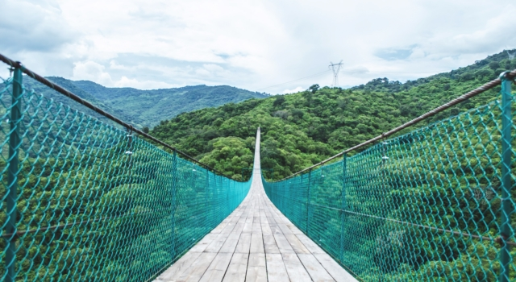
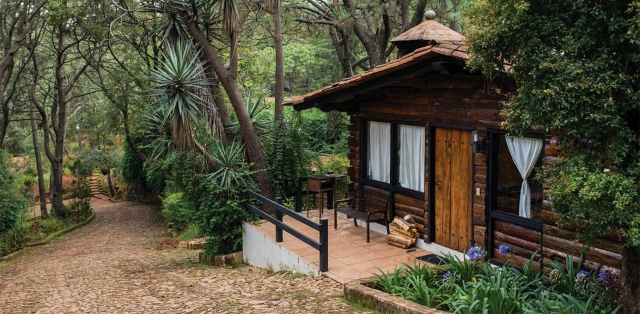
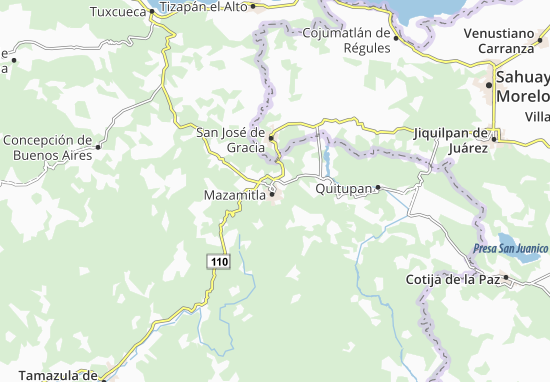

Mazamitla
Enclavado en el corazón de la Sierra del Tigre, lugar lleno de historia, tradición, magia y ensueño invita a vivir la experiencia más inolvidable en uno de las poblaciones más emblemáticas y tradicionales en el occidente del país.
Su gente amable, su arquitectura provinciana, su gastronomía, sus fiestas tradicionales, sus festividades culturales, su artesanía, los deportes extremos y la visita a los diferentes puntos de interés como fraccionamientos, desarrollos eco-turísticos, parques naturales, casa de la cultura, Centro Histórico, andador peatonal de la calle Hidalgo entre otros muchos atractivos harán una de Mazamitla una vivencia mágica.

¿Que hacer en Mazamitla?
Rodeado de un impresionante bosque, este lugar en Jalisco con nombre náhuatl ofrece una gran cantidad de actividades para los aventureros y aquellos que buscan la tranquilidad.
1 . La Parroquia de San Cristobal es uno de los edificios más emblemáticos de todo el municipio, fue construida a finales del siglo pasado gracias a la iniciativa de José Santana Garcia.
2 . En el Museo Mazamitla se alberga una colección de objetos que cuenta el origen y desarrollo del poblado.
3 . Dentro del museo se encuentra el Mercado de Artesanías, el cual esta lleno de productos que te podrás llevar.
4 . Explora la calle de Hidalgo donde hallarás diferentes tipos de plantas y productos de conserva típicos de la región.
5 . Realiza una caminata por el fraccionamiento Los Cazos hasta llegar a la Cascada el Salto, donde podrás apreciar una de las mejores vistas del país.
6 . Podrás hacer un paseo a caballo en el mismo fraccionamiento y admirar los paisajes que la zona tiene que ofrecer.
7 . Mundo Aventura es un parque ecológico donde se pueden practicar deportes extremos como; tirolesa, rapel, escalada y gotcha.
8 . Haz un tour “4×4 off the Road” sobre el Corredor Turístico de Mazamitla y termina el día con un picnic en familia.
9 . Vuela en parapente por encima de las famosas áreas verdes por las cuales este pueblo se ha hecho famoso.
10 . Aventúrate en el Mercado de antojitos y deléitate con platillos típicos como; el bote y el pajarete.

¿Cómo llegar a Mazamitla?
La distancia entre Guadalajara y Mazamitla es de 135 kilómetros aproximadamente, para llegar a este municipio se recomienda ir por Av. López Máteos hacia el sur, pasar el periférico y seguir con rumbo a Colima por la Carretera Federal Libre Mex 54 hasta llegar al puente con el entronque a la Carretera Federal Libre Mex 15 (Guadalajara–Jiquilpan) tomar el puente y seguir por la Carretera Federal ruta Jocotepec- Tuxcueca; al llegar a Tuxcueca se encontrará el entronque con la Carretera Estatal Libre Jal 405 tomar la misma y unos kilómetros adelante al encontrar el entronque que va a Teocuitatlán de Corona (derecha) y a Mazamitla (izquierda) tomar a la izquierda. El recorrido se realiza en aproximadamente 1 hora y 45 minutos.

Costos Estimados
Aquí tenemos una estimación aproximada de los costos para visitar Mazamitla:
Transporte: El costo del transporte para llegar a Mazamitla dependerá de tu ubicación de partida y del medio de transporte que elijas. Si viajas en automóvil propio, deberás considerar el costo de la gasolina y los peajes, que pueden variar según la distancia y el tipo de vehículo. Si prefieres utilizar transporte público, como autobuses, los precios pueden oscilar entre $200 y $500 pesos por persona, dependiendo de la distancia y el servicio.
Alojamiento: Mazamitla ofrece una variedad de opciones de alojamiento que van desde cabañas rústicas hasta hoteles boutique. Los precios de alojamiento pueden variar según la temporada, la ubicación y las comodidades ofrecidas. Puedes encontrar opciones económicas desde $800 hasta $2000 pesos por noche en cabañas o posadas, mientras que los hoteles de mayor categoría pueden tener precios más altos.
Alimentación: En Mazamitla encontrarás una gran oferta gastronómica que incluye platillos típicos de la región, así como opciones de cocina internacional. Los precios de los restaurantes pueden variar, pero puedes esperar pagar entre $100 y $300 pesos por comida en un restaurante local.
Actividades: Mazamitla ofrece una variedad de actividades para disfrutar al aire libre, como senderismo, paseos en cuatrimoto, recorridos en bicicleta, y visitas a cascadas y miradores. Los precios de estas actividades pueden variar, pero puedes esperar pagar entre $100 y $500 pesos por persona, dependiendo de la actividad y la duración del tour.
Compras: En Mazamitla encontrarás tiendas de artesanías y productos locales donde podrás adquirir recuerdos y souvenirs. Los precios pueden variar según el artículo y la tienda, pero es posible encontrar productos a precios accesibles, especialmente en los mercados locales y las tiendas de artesanías.
Otros gastos: Además de los gastos mencionados anteriormente, es posible que desees reservar un presupuesto adicional para actividades adicionales, souvenirs y otros gastos imprevistos.